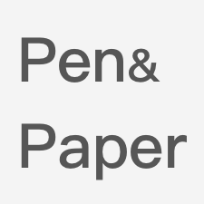
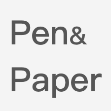
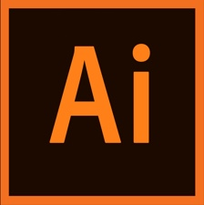

-
Interactive Design
Combined with user research results and accumulated design method theory, we designed a prototype design with good user experience and improved business. Make flow charts, design information framework and prototype design (not limited to high and low fidelity diagrams), and conduct simple usability testing. The tools are not the point, the point is to be able to effectively convey your ideas.
 

-
Hi-Fi Design
Provide appropriate visual solutions, master the design rules of iOS and Material Design, and make different design adjustments for different platform specifications. Slices export the resources required by the mobile terminals at both ends.
-
user research
It can combine multiple aspects of data to classify competing products, create user portraits, and draw experience maps and KANO models. Currently, I am learning common Internet user research methods such as focus groups, user interviews, and card sorting. I am currently studying on my own in Coursea and NetEase Cloud classrooms.
-
motion design
Create dynamic interface interactions and MD animations. Familiar with using Lottie to export json files, directly output animation code, no need to repeat demos, and reduce useless communication.


-
graphic design
Carry out LOGO design, illustration synthesis and album design based on the ideas proposed by superiors and customers.

-
Front-end programming
HTML5 + CSS3 + Java script, this website is written by me (so there are bugs TAT that I don’t know how to fix)
-
Language
English (CET-6),Cantonese and Mandarin